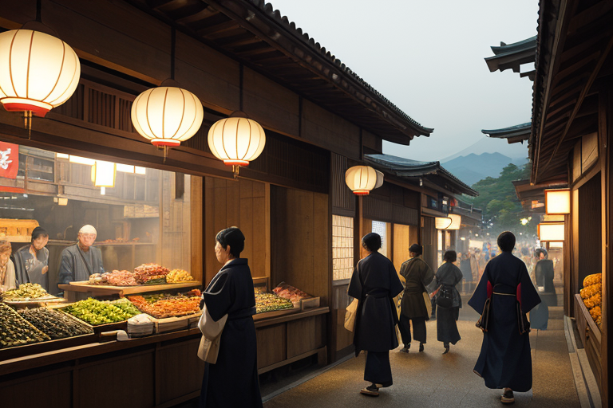
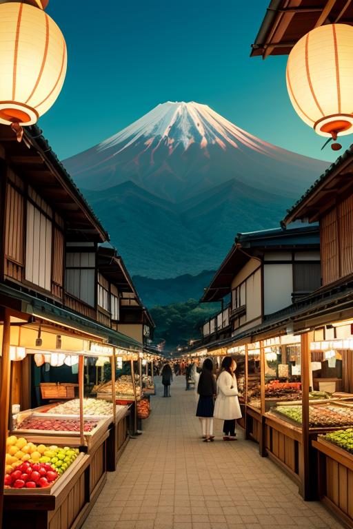
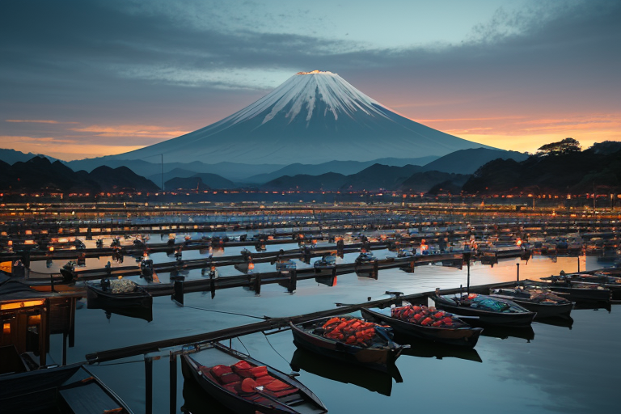
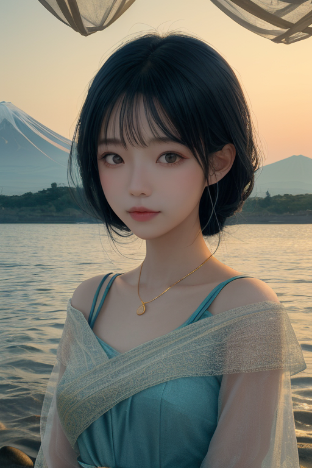
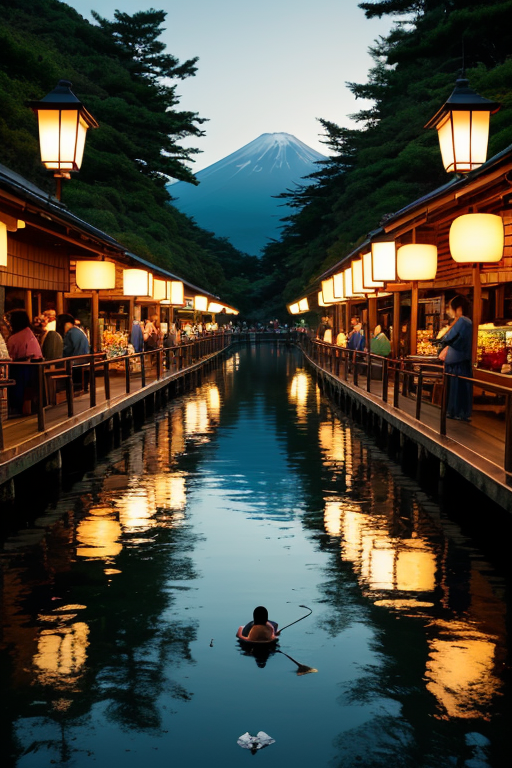

第一章 現実の静岡
あなたはまだ気づいていない。この土地にも、王がいることを。
静岡市の青物横丁は、朝の光に包まれて活気づいていた。みかんの甘い香り、新茶の清々しい薫り、浜名湖から届いたばかりのうなぎの水音が、狭い路地に満ちている。商人たちの掛け声、トラックのエンジン音、レジのチャイム。すべてが複雑に絡み合い、ひとつの流れを作っていた。金と物と人の流れ。それはこの土地の命脈であり、同時に、微かな歪みを生み出す源泉でもあった。
路地の片隅、日陰のベンチに一人の青年が座っていた。スーツ姿だが、どこか浮世離れした穏やかな眼差しで、市場の喧騒を静かに見つめている。彼の名はスルガリア・エクイノクス。この地に遣わされた王だ。彼の目には、見えないものが映っていた。活気の下に潜む、ごく僅かなエネルギーの偏り。過剰な熱気、滞る流れ、些細な軋み。それらは今は無害だが、積もり積もれば、やがて大きな「歪み」となる種だった。
彼は微かに息を吐いた。問いが心をよぎる。均衡とは、この流れを止めることなのか？

第二章 歪みの兆候
三保の松原の先、駿河湾の海面が、今日は妙に静かだった。水平線が、あまりに完璧な直線を描いている。エクイナが微かに眉をひそめる。「主君、海の息が弱まっています。山からの気配も、どこか淀んでいるようで」
スルガリアは、静岡市の青果市場の二階から、富士の稜線を眺めていた。朝市の活気は最高潮だが、その喧騒の波の底に、不自然な「間」が幾つも生じている。客の流れが一点に偏り、隣の店先には人が途絶える。金の流れが、見えない堰でせき止められ、淀み始めている。これは経済の、人の心の、ごく初期の痙攣だ。
「均衡は、流れを止めることではない」と彼は呟く。止めることは死を意味する。彼の役目は、この活気という激流そのものを否定することではなく、その中に生じる澱みや偏りを、そっと解きほぐすことにある。しかし、問いは残る。澱みを解く微調整が、果たしてこの奔流を、本当に「均衡」へと導けるのか。彼は、市場のざわめきを、全身の皮膚で感じ取った。

第三章 王の葛藤
浜名湖のうなぎ漁師たちの声が、焦りを帯びていた。不漁と高騰する餌代。欲望は、湖の均衡を脅かす過剰な養殖へと駆り立てる。スルガリアは、その歪みを指先で感じていた。増やしすぎた生簀は、水を淀ませ、やがては疫病を招く。彼は微かに手を動かし、養殖場の水流にほんの少しの「揺らぎ」を加えた。均一すぎる流れが、淀みを生むからだ。
「これで…良いのか」
エクイナが呟く。彼女の調整は、確かに物理的な均衡を保つ。しかし、漁師たちの焦りという「心の歪み」は、そのまま残る。王の仕事は、自然の均衡を守ること。だが、その結果として人間の生計を脅かすのであれば、それは真の均衡と言えるのか。富士宮の朝市で、高値をつける茶葉を前にした農家の、嬉しさと不安が入り混じった表情が、彼の胸を締め付けた。
彼は感情を持たない存在として生まれた。だが今、この地の「感情密度」が、彼に葛藤という重みを教えていた。守るべきは、山と海のバランスか。それとも、その間に生きる人々の、切実な営みのバランスか。均衡は、決して静止した一点ではない。しかし、その動的な均衡の線上で、何を、どれだけ、優先させるべきか。彼は、静かなる富士を仰ぎ、答えのない問いを抱きしめた。

第四章 妖精との対話
浜名湖の汽水域で、エクイナは潮の満ち引きを見つめていた。「王よ、ここでは淡水と海水が混ざり合い、うなぎを育みます。完全な淡水でも海水でもない、この『間』が命を支えるのです」
彼女は続けた。「商いも同じです。富士宮の浅間大社への参詣、東海道を往来する人と金。全ては流れています。流れが止まれば、それは死を意味します。茶も、摘まれて揉まれ、乾き、湯に溶けて初めてその香りを放つ。変化の過程そのものが均衡なのです」
スルガミアが三保の松原の砂を掌に載せた。「この砂は富士の噴火で生まれ、川が運び、波が磨きました。今ここにあるのは、途方もない時間の均衡の、一瞬の姿です」
均整王はうなぎ漁師の朝の支度を見た。彼らは潮時を計算し、網を整える。それは自然のリズムと人間の営みの、絶え間ない調整の営みだった。均衡は止まらない。それは呼吸のように、潮のように、人々の日々の選択の連続の中にこそ存在する。彼はその動きそのものを、守り、微調整する存在なのだと、静かに理解した。

第五章 微調整と余韻
富士宮の朝市は、活気に満ちていた。露店には新茶の香りが立ち、みかんの鮮やかな色が並ぶ。人々の行き交う隙間を、均整王は流れるように通り抜ける。彼の目には、人と物と金の流れが、無数の光の糸のように見えている。ほんの少し、ほんのわずかに、その糸の張りを調整する。重すぎる荷車の車輪が、道の小さな石をかすめて通り過ぎる。転びかけた子供の手を、偶然通りかかった母親が掴む。それは誰にも気付かれない、偶然の連鎖の微調整だ。
彼は浜名湖のほとりに立った。湖面は鏡のように静かで、対岸のうなぎ漁の舟影がゆらめいている。均衡は止まらない。止まろうとする瞬間、それは歪みとなる。彼が調整するのは、止まらぬ流れそのものの、ほんの一瞬のリズムだ。富士の偉容を背に、人々の日常は続いていく。その中で、ほんの少しの不幸が回避され、ほんの少しの幸運が紡がれる。彼はそれで十分だった。
やがて夕暮れが三保の松原を染め、富士はシルエットとなった。均整王の仕事は、今日もまた、誰の記憶にも留まらない微調整の連続で終わる。彼は静かに微笑んだ。これが、彼の王国の、終わらない均衡だった。
あなたの町にも、王がいる。